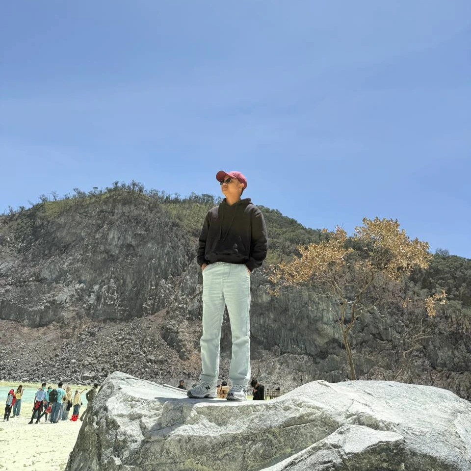
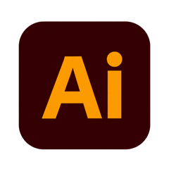
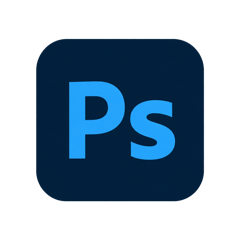
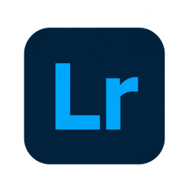

Understand
Start with the purpose, audience and practical requirements of the project.
I’m Aiman Harun. I create visual identities, print materials and apparel that bring ideas to life.
Explore my work ↘01 / THE PORTFOLIO
Four collections. A range of creative work.
02 / A LITTLE ABOUT ME

Thoughtful visuals for events, apparel, print and weddings.
I’m Muhammad Aiman bin Harun, a freelance graphic designer based in Malaysia. I work across event and programme design, apparel design, print and stationery design, and wedding design.
From event banners and roll-up displays to team jerseys, corporate shirts and family day apparel, I turn ideas into artwork for real use. My portfolio also includes pocket files, certificates, wedding welcome boards and stickers.
My background in Computer Science brings a structured approach to each brief, with attention to layout, visual consistency and preparing files for their final format.

Illustrator
Photoshop
Lightroom03 / MY APPROACH
Start with the purpose, audience and practical requirements of the project.
Develop the visual direction and refine the details through feedback.
Bring the design together and prepare the files for print or digital use.